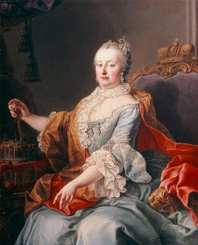
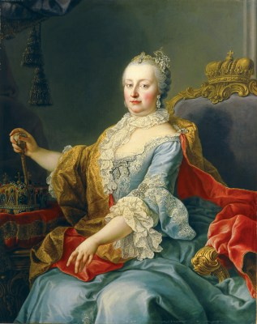
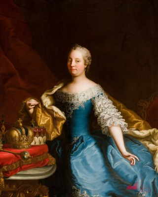
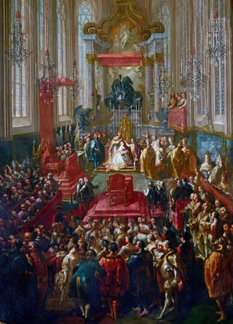
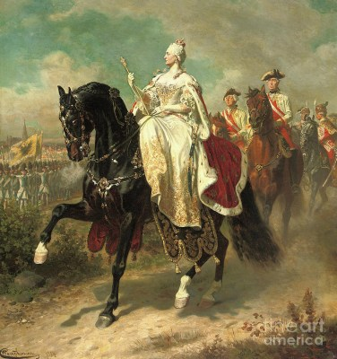

terezia_maria29
4 bejegyzés
1,5 Millió követő
438 követés
Az ifjúság helyes nevelését és az egész közoktatásügynek intézését
a józan erkölcsű népek mindenkoron oly nagy fontosságúnak tekintették,
hogy benne látták országaik legfőbb sarokkövét,
és az általános jólét alapját. És méltán.
Ti vagytok az ország — viselkedjetek hozzá méltón,
Puszi mindenkinek!
Bejegyzések
Mentve
Jelölések



